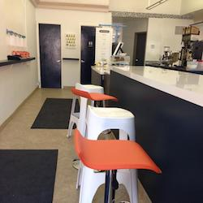
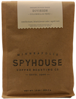
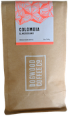
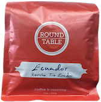
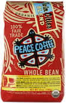
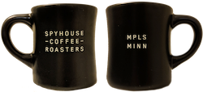
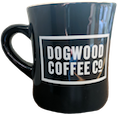
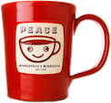

The places in which we live and work, the rooms in which we teach, drink coffee, and sleep, are always apprehended, understood, and constructed visually.1a
On this web page, I analyze the visual rhetoric of coffee in the Twin Cities. Because "coffee in the Twin Cities" is a broad category that includes corporate locations, roasters, cafés, restaurants, etc., and because coffee shops and restaurants may have their own image separate from that of their coffee supplier, I have chosen to focus my analysis on a discrete category: companies based in the Twin Cities that are both coffee roasters and coffee shops. This finer category includes Dogwood Coffee, Peace Coffee, Roundtable Coffee Works, and Spyhouse Coffee Roasters.
Though some people — particularly those of the Folgers-drinking variety — may be tempted to argue that coffee leans more towards homogenous than not, this is clearly not the case. On just the most basic level, there are different species (most commonly, Arabica and Robusta). Roasts and caffeine-levels differ, as do flavors, prices, packages, and many other aspects. When one thinks of the experience of filling a Styrofoam cup at a gas station versus having a barista carefully put a drink together, one can easily see that 'coffee' can be greatly differentiated.
Additionally, it is important to recognize the space and time that these companies are operating in. Although they may have a narrow mission, companies expand and contract and change; they respond to the needs of their customers, current and/or potential. I argue that, in serving their customers in "the fragmented, cluttered, global and therefore, unprecedentedly competitive environment" that has "placed a greater emphasis on visual appearance as a conveyor of brand equity",2a these companies have decided to reject the "abstractions and discomforts of globalized postmodern consumer culture",1b instead offering a rhetoric of relative simplicity. In contrast to the overbearing version of modern consumerism,2 these companies choose to move from saturated visuals to simple designs that emphasize their values. This is important to note, as it helps us to better understand many underlying factors in these companies' strategies of responding to the needs of their customers in roughly April 2017.
The audience for a coffee shop is, of course, coffee drinkers. The audience for a coffee roaster includes both preparers of coffee who will sell it to their own customers and individual customers who will prepare it themselves. In the case of the preparer-as-an-audience, the roaster either passes their branding along with the product, as seen in storefronts like Cafe Alma, which hangs a sign announcing that it is "proudly serving Peace Coffee", or the roaster simple roasts, packaging the coffee with branding from the seller, as seen in Five Watt, which sells its own branded coffee that is roasted by Roundtable Coffee Works. In the interest of a coherent analysis, I focus only on the companies as stores and as roasters with their own branding.
While these companies do not all sell a pound of coffee for the same price, they are all on the higher end of the range. They are local or regional in scope, which separates them from huge chains with massive economies of scale like Starbucks. Their higher prices and attention to things like fair trade and small batches further separate them from mid- and low-range coffee companies.
Their spaces — with tables, power outlets, and in some cases advertised free Wi-Fi — indicate that they are reaching customers who are likely to stay in the store to work or converse. Their geographic locations confirm this: all of these coffee shops border between commercial strips and residential areas with relatively young people.
Given this, and with the knowledge that there aren't very many little kids drinking coffee, the audience for these shops is the often coveted demographic of working 18–34 year olds. This fits my own personal anecdotal evidence and evidence from NPD Group, a market research firm that found from a sample of 5,521 coffee drinkers (ranging 18–64 years old) that those in younger age ranges were more likely to exhibit "out-of-home loyalty".3
These coffee companies create meaning and argue for their brand in a number of ways visually. To analyze these visual rhetorics, I use Aristotle's appeals in conjunction with color and other design elements. Aristotle's appeals — ethos, pathos, and logos — are the oldest rhetorical strategies. These classic appeals can be applied to visual arguments, and Twin Cities coffee is no exception. While there may be arguments in favor of strong pathos or logos, I find ethos to be the dominant appeal made by these four companies, so it is the appeal I will focus on.
Associations with color are manifold, acquiring "positive or negative values according to the context".4a Color and other design elements are helpful in understanding the visual rhetorics because they support the arguments being made by the companies.
There are two main visual rhetorical mediums that coffee companies use when communicating with a potential customer: packaging and storefront. Social media may be an exception, but images contained therein are often photographs of the product/space or digital renderings of the company's branding, and thus do not offer a significantly novel aspect for this analysis.
Not only is visual rhetoric implicated in the packaging of the products, but it is also a factor in the physical space of the shop. Barista experience aside, there are things acting rhetorically on a customer that walks inside a store: "here, [in the store], the forces of global capitalism, the contemporary transformation of transportation, production and packaging technologies and the discourses of postmodern consumer marketing intersect with the lived bodies of individuals".1c In other words, the store is the place that all of aspects of commercialism come together to greet the consumer. An abundance of labels, fonts, graphics, colors, etc. can quickly become overwhelming, as anyone who has recently walked through the Mall of America might note. This kind of saturation is one of the characteristics of postmodern consumer culture, and it can make people feel alienated from anything natural or human.1d, 2a It is also helpful in explaining the relative and possibly surprising spareness of the designs of Twin Cities coffee.
The buildings themselves are also situated specifically, and their geographic location projects information about the company. For example, the Spyhouse in the Northeast neighborhood of Minneapolis is on a corner separating the commercial blocks of the neighborhood from the residential. This is the most pronounced example, but the same formula is present with all of these coffee shops' locations. The Longfellow Peace Coffee is situated more deeply in a neighborhood, but is nonetheless quite close to strips with a heavier commercial presence. These locations are not just good business because they're on busy avenues; they are good business because they indicate a closeness with, yet separation from, the hustle and bustle of modern commerce. In other words, their geographic locations strengthen their ethos as they appeal to modern, busy, conscious consumers.
Golombisky and Hagen (2016) note that "[c]olors that appear together naturally can make pleasing palettes".8a Spyhouse clearly follows this, creating its entire palette from the natural array of browns, reds, whites, and blacks present in the woods and brick of its interior. Dogwood uses natural colors as well, but to a lesser degree. Peace Coffee, despite its much greater use of color in its branding and on its interior, follows this same formula. These three shops make use of wood and natural colors; however, given the ethos of each company, they use them to different ends.
Spyhouse, which caters to — and based on its visual rhetorical strategies, targets — a younger and trendier crowd, uses the natural bricks and wood colors to place itself in the upscale image of farm-to-table-style Americana, like that seen in contemporary American restaurants. Dogwood's name is in reference to the shrub native to Minnesota,9 and many of its decorations — a vintage snowmobile hanging from the ceiling, painted canoe panels on the wall — create an image of Minnesotan outdoorsiness. The use of color in this manner supports this image. Peace Coffee is perhaps the easiest to decipher. The use of multiple woods, bright colors, and mountains is substantiated by the company's name, involvement in its community, sale of ethical coffee, and local bike messenger delivery.
Roundtable10 Roundtable is the newest of the four shops, and an outlier in terms of its interior. While it does have wood for its seating, the benches are the only main source of exposed, natural wood — the rest of store is a shiny black and white, accented by orange and occasional navy blue. Despite this unnatural and perhaps otherwise sterile-seeming interior, the decoration adds a sense of friendliness and earnestness: LEGO bricks are piled on the window sills; a LEGO brick mug sits on the counter; and modern graphic design featuring a line-drawn beaver telling you to "Do Good Work" hangs on the walls. Behind the counter, burlap bags of unroasted beans lean against the machinery in full view.
"Within the mix of individual visual design elements that comprise a product or package, color is known to serve as a particularly vivid, affect-loaded and memorable visual cue and persuader".2b
  While brown may be unpleasant in some contexts, particularly those involving digestion, it can also elicit positive attributes, such as "natural" and "organic", which have been shown to connote health and goodness to consumers.1, 11 Connotations with 'healthy', 'good', and 'natural' are seen in many "natural colors" like browns, blues, and greens, and, when placed in the correct context, have been shown to "affirm individuals' values of social responsibility and ethical consciousness".11a Though the connection to health may be beneficial, it appears to be secondary to the primary purpose of Spyhouse's and Dogwood's packaging, which is to stay consistent with their color palette and to reinforce the company's ethos. The bags continue the uncluttered design, with the fronts giving little besides the minimum amount of information a consumer would expect: company name, roast name, origin, and weight.
12 13 Peace Coffee's relatively busy packaging stands in contrast to the other two. It does, however, still eschew the in-your-face promotion characteristic of postmodern marketing, instead presenting a strong ethos appeal with the multiple organic, fair trade, and shade grown labels. Additionally, the turtle and peace sign are both associated with the laid-back counter culture that might accompany a consumer looking for coffee with the ethical attributes that Peace Coffee has.
  All four companies' mugs have remarkably minimal designs, each of which again boost their ethos. Spyhouse and Dogwood are again quite similar with their characteristically minimal diner mugs. Additionally, both have camp-style enamelware mugs: Spyhouse's stays minimal, while Dogwood's is an assortment of camping icons. Peace Coffee's iconic mug features a simple smiley face, possibly engaging a pathos appeal, but subtly reinforcing the ethos of the company as one that cares about its customers, product, and planet. Roundtable's minimalist mug features its boosterish beaver that again promotes the idea that one should work hard and reflects that Roundtable does the same. 14
Conducting this analysis through the lens of a reaction to postmodern consumerism allowed me to better understand the seemingly minimal visual rhetorical strategies used by Twin Cities coffee companies. Informed by design elements and the Aristotelian appeals, I found that the strategies were not minimal, but were in fact rich with rhetorical meaning.
Spyhouse and Dogwood are similar in their approaches, targeting younger crowds with an eye towards current style. Additionally, they and Roundtable assert an honesty and passion for their craft, shown visually through minimal design that indicates a closeness with and focus on the product. Roundtable is new and appears to be finding its footing. Unlike the others, it does not go the "natural" route; instead, it uses other design elements and an ethos appeal to attract customers. Peace Coffee uses imagery rather than minimal design to engage consumers that are more concerned about their coffee deeper down the supply chain.
I find Spyhouse Coffee Roasters and Peace Coffee to be the most consistent and thus most coherent and effective in their visual rhetoric. Dogwood Coffee, while similar to Spyhouse in many ways, was less consistent. Its sporadic use of neon dislodged its image, and I felt it was stretched too thin in chasing outdoorsy, minimal, and neon visuals while maintaining an ethos of craftsmanship and modernity. Roundtable Coffee Works is somewhat between Spyhouse and Peace Coffee on one end and Dogwood on the other. It is a less-established brand and a much smaller shop, but given its early open and close hours, it also targets a different audience. The storefront is somewhat incongruous, with elements pointing toward natural and down-to-Earth and elements pointing toward a rejection of the former. Because of its ethos mainly being derived from a seriousness towards work and a lightheartedness toward self, I didn't find the inconsistency as inimical as it otherwise could have been, given a different approach.